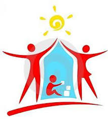

|
Про нас
Робота з дітьми
Насильство у сім'ї
Переселенці
Звернення
|
|
Основні проблеми, які вирішуються під час надання спеціалістами центрів соціальних служб для сім’ї, дітей та молоді соціальних послуг особам з числа дітей-сиріт та дітей, позбавлених батьківського піклування:

вирішення житлово-побутових проблем, у т.ч. поліпшення житлових умов та сприяння у поставленні на квартирний облік;
налагодження (відновлення) соціальних зв’язків;
отримання допомоги в лікуванні, догляді;
отримання доступу до більш освітніх можливостей або соціальної активності;
навчання навичкам безпечного способу життя щодо інфікування ВІЛ;
сприяння у працевлаштуванні;
соціально-психологічна підтримка: розвиток комунікативних навичок, формування впевненості у собі та позитивної самооцінки, набуття навичок уникнення та розв’язання конфліктів, вирішення особистісних проблем;
допомогу у працевлаштуванні або перекваліфікації, підвищенні кваліфікації, продовженні навчання;
вирішення таких складних соціальних проблем, як реєстрація, поставлення на квартирний облік, поновлення права на житло, погашення заборгованості за комунальні послуги.
допомога в отриманні пільг передбачених законодавством.
|